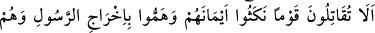
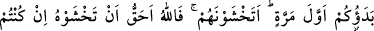
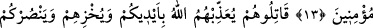
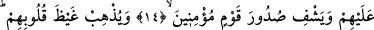
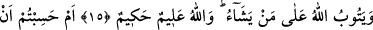
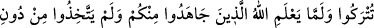
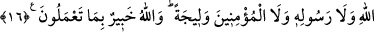

MÜŞRİKLERLE SAVAŞ
13. Yeminlerini bozan, peygamberi (yurdundan) çıkarmaya kalkışan ve size karşı
ilk önce savaşa başlamış olan bir kavme karşı savaşmayacak mısınız?! Yoksa
onlardan korkuyor musunuz? Eğer (gerçek) müminler iseniz bilin ki Allah
kendisinden korkmanıza daha lâyıktır.
14. Onlarla savaşın ki Allah sizin ellerinizle onları cezalandırsın; onları rezil
etsin; sizi onlara galip kılsın ve mümin toplumun kalplerini ferahlatsın.
15. Ve onların kalplerinden öfkeyi gidersin. Allah dilediğinin tevbesini kabul eder.
Allah bilendir, hikmet sahibidir.
16. Yoksa Allah, sizden cihâd eden, Allah, peygamber ve müminlerden başkasını
kendilerine sırdaş edinmeyenleri bilmeden (ortaya çıkarmadan) bırakılacağınızı mı
sandınız? Allah yaptıklarınızdan haberdardır.
Rasûlullah ve müminlerin aleyhinde kimseye yardım etmeyeceklerine dair onların
yanında ettikleri “yeminlerini bozan” ve Bekiroğulları kabilesine Huzâlılar’a karşı
yardım eden…
Kâşifî der ki: Peygamberle Kureyş arasında yapılan anlaşmalardan biri de şudur:
Anlaşma tarafları birbirini incitmeyecek, başkaları ile savaştıklarında destek
vermeyecekler. Kureyş ittifak halinde bulunduğu Benî Bekr’e silah ve asker yardımı
yaptı ve Hz. Peygamber’in müttefiki olan Benî Huzâ’ya karşı savaştılar.
“Peygamberi” yurdundan “çıkarmaya kalkışan” yeltenen ve niyetlenen müşrikler…
Onlar Mekke’de Darunnedve’de toplanıp aralarında istişâre ederek Hz. Peygamber
(a.s.)’ı Mekke’den çıkarmayı kararlaştırmışlardı. İşte bu âyet, onlara bu önceki
suçlarını haber vermektedir. Başka bir görüşe göre ise Allah Rasûlü’nü çıkarmak
isteyenler yahudilerdir. Rasûlullah ile yaptıkları andlaşmayı bozmuşlar ve Medine-i